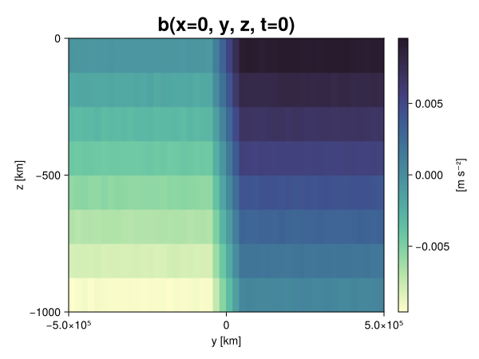
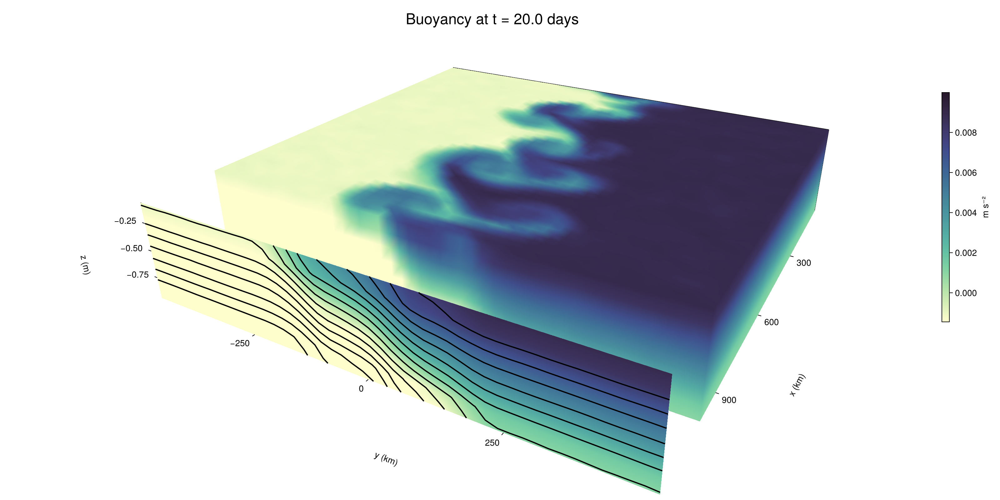

Baroclinic adjustment
In this example, we simulate the evolution and equilibration of a baroclinically unstable front.
Install dependencies
First let's make sure we have all required packages installed.
using Pkg
pkg"add Oceananigans, CairoMakie"using Oceananigans
using Oceananigans.UnitsGrid
We use a three-dimensional channel that is periodic in the x direction:
Lx = 1000kilometers # east-west extent [m]
Ly = 1000kilometers # north-south extent [m]
Lz = 1kilometers # depth [m]
grid = RectilinearGrid(size = (48, 48, 8),
x = (0, Lx),
y = (-Ly/2, Ly/2),
z = (-Lz, 0),
topology = (Periodic, Bounded, Bounded))48×48×8 RectilinearGrid{Float64, Periodic, Bounded, Bounded} on CPU with 3×3×3 halo
├── Periodic x ∈ [0.0, 1.0e6) regularly spaced with Δx=20833.3
├── Bounded y ∈ [-500000.0, 500000.0] regularly spaced with Δy=20833.3
└── Bounded z ∈ [-1000.0, 0.0] regularly spaced with Δz=125.0Model
We built a HydrostaticFreeSurfaceModel with an ImplicitFreeSurface solver. Regarding Coriolis, we use a beta-plane centered at 45° South.
model = HydrostaticFreeSurfaceModel(; grid,
coriolis = BetaPlane(latitude = -45),
buoyancy = BuoyancyTracer(),
tracers = :b,
momentum_advection = WENO(),
tracer_advection = WENO())HydrostaticFreeSurfaceModel{CPU, RectilinearGrid}(time = 0 seconds, iteration = 0)
├── grid: 48×48×8 RectilinearGrid{Float64, Periodic, Bounded, Bounded} on CPU with 3×3×3 halo
├── timestepper: QuasiAdamsBashforth2TimeStepper
├── tracers: b
├── closure: Nothing
├── buoyancy: BuoyancyTracer with ĝ = NegativeZDirection()
├── free surface: ImplicitFreeSurface with gravitational acceleration 9.80665 m s⁻²
│ └── solver: FFTImplicitFreeSurfaceSolver
├── advection scheme:
│ ├── momentum: WENO reconstruction order 5
│ └── b: WENO reconstruction order 5
└── coriolis: BetaPlane{Float64}We start our simulation from rest with a baroclinically unstable buoyancy distribution. We use ramp(y, Δy), defined below, to specify a front with width Δy and horizontal buoyancy gradient M². We impose the front on top of a vertical buoyancy gradient N² and a bit of noise.
"""
ramp(y, Δy)
Linear ramp from 0 to 1 between -Δy/2 and +Δy/2.
For example:
```
y < -Δy/2 => ramp = 0
-Δy/2 < y < -Δy/2 => ramp = y / Δy
y > Δy/2 => ramp = 1
```
"""
ramp(y, Δy) = min(max(0, y/Δy + 1/2), 1)
N² = 1e-5 # [s⁻²] buoyancy frequency / stratification
M² = 1e-7 # [s⁻²] horizontal buoyancy gradient
Δy = 100kilometers # width of the region of the front
Δb = Δy * M² # buoyancy jump associated with the front
ϵb = 1e-2 * Δb # noise amplitude
bᵢ(x, y, z) = N² * z + Δb * ramp(y, Δy) + ϵb * randn()
set!(model, b=bᵢ)Let's visualize the initial buoyancy distribution.
using CairoMakie
# Build coordinates with units of kilometers
x, y, z = 1e-3 .* nodes(grid, (Center(), Center(), Center()))
b = model.tracers.b
fig, ax, hm = heatmap(view(b, 1, :, :),
colormap = :deep,
axis = (xlabel = "y [km]",
ylabel = "z [km]",
title = "b(x=0, y, z, t=0)",
titlesize = 24))
Colorbar(fig[1, 2], hm, label = "[m s⁻²]")
fig
Simulation
Now let's build a Simulation.
simulation = Simulation(model, Δt=20minutes, stop_time=20days)Simulation of HydrostaticFreeSurfaceModel{CPU, RectilinearGrid}(time = 0 seconds, iteration = 0)
├── Next time step: 20 minutes
├── Elapsed wall time: 0 seconds
├── Wall time per iteration: NaN days
├── Stop time: 20 days
├── Stop iteration : Inf
├── Wall time limit: Inf
├── Callbacks: OrderedDict with 4 entries:
│ ├── stop_time_exceeded => Callback of stop_time_exceeded on IterationInterval(1)
│ ├── stop_iteration_exceeded => Callback of stop_iteration_exceeded on IterationInterval(1)
│ ├── wall_time_limit_exceeded => Callback of wall_time_limit_exceeded on IterationInterval(1)
│ └── nan_checker => Callback of NaNChecker for u on IterationInterval(100)
├── Output writers: OrderedDict with no entries
└── Diagnostics: OrderedDict with no entriesWe add a TimeStepWizard callback to adapt the simulation's time-step,
conjure_time_step_wizard!(simulation, IterationInterval(20), cfl=0.2, max_Δt=20minutes)Also, we add a callback to print a message about how the simulation is going,
using Printf
wall_clock = Ref(time_ns())
function print_progress(sim)
u, v, w = model.velocities
progress = 100 * (time(sim) / sim.stop_time)
elapsed = (time_ns() - wall_clock[]) / 1e9
@printf("[%05.2f%%] i: %d, t: %s, wall time: %s, max(u): (%6.3e, %6.3e, %6.3e) m/s, next Δt: %s\n",
progress, iteration(sim), prettytime(sim), prettytime(elapsed),
maximum(abs, u), maximum(abs, v), maximum(abs, w), prettytime(sim.Δt))
wall_clock[] = time_ns()
return nothing
end
add_callback!(simulation, print_progress, IterationInterval(100))Diagnostics/Output
Here, we save the buoyancy, $b$, at the edges of our domain as well as the zonal ($x$) average of buoyancy.
u, v, w = model.velocities
ζ = ∂x(v) - ∂y(u)
B = Average(b, dims=1)
U = Average(u, dims=1)
V = Average(v, dims=1)
filename = "baroclinic_adjustment"
save_fields_interval = 0.5day
slicers = (east = (grid.Nx, :, :),
north = (:, grid.Ny, :),
bottom = (:, :, 1),
top = (:, :, grid.Nz))
for side in keys(slicers)
indices = slicers[side]
simulation.output_writers[side] = JLD2OutputWriter(model, (; b, ζ);
filename = filename * "_$(side)_slice",
schedule = TimeInterval(save_fields_interval),
overwrite_existing = true,
indices)
end
simulation.output_writers[:zonal] = JLD2OutputWriter(model, (; b=B, u=U, v=V);
filename = filename * "_zonal_average",
schedule = TimeInterval(save_fields_interval),
overwrite_existing = true)JLD2OutputWriter scheduled on TimeInterval(12 hours):
├── filepath: ./baroclinic_adjustment_zonal_average.jld2
├── 3 outputs: (b, u, v)
├── array type: Array{Float64}
├── including: [:grid, :coriolis, :buoyancy, :closure]
├── file_splitting: NoFileSplitting
└── file size: 30.7 KiBNow we're ready to run.
@info "Running the simulation..."
run!(simulation)
@info "Simulation completed in " * prettytime(simulation.run_wall_time)[ Info: Running the simulation...
[ Info: Initializing simulation...
[00.00%] i: 0, t: 0 seconds, wall time: 21.204 seconds, max(u): (0.000e+00, 0.000e+00, 0.000e+00) m/s, next Δt: 20 minutes
[ Info: ... simulation initialization complete (23.388 seconds)
[ Info: Executing initial time step...
[ Info: ... initial time step complete (19.806 seconds).
[06.94%] i: 100, t: 1.389 days, wall time: 35.111 seconds, max(u): (1.338e-01, 1.161e-01, 1.493e-03) m/s, next Δt: 20 minutes
[13.89%] i: 200, t: 2.778 days, wall time: 1.217 seconds, max(u): (2.143e-01, 1.712e-01, 1.784e-03) m/s, next Δt: 20 minutes
[20.83%] i: 300, t: 4.167 days, wall time: 944.609 ms, max(u): (2.960e-01, 2.495e-01, 1.778e-03) m/s, next Δt: 20 minutes
[27.78%] i: 400, t: 5.556 days, wall time: 869.416 ms, max(u): (3.630e-01, 3.676e-01, 1.942e-03) m/s, next Δt: 20 minutes
[34.72%] i: 500, t: 6.944 days, wall time: 872.651 ms, max(u): (4.667e-01, 5.465e-01, 2.081e-03) m/s, next Δt: 20 minutes
[41.67%] i: 600, t: 8.333 days, wall time: 854.693 ms, max(u): (5.652e-01, 7.740e-01, 3.037e-03) m/s, next Δt: 20 minutes
[48.61%] i: 700, t: 9.722 days, wall time: 887.451 ms, max(u): (8.327e-01, 1.125e+00, 3.605e-03) m/s, next Δt: 20 minutes
[55.56%] i: 800, t: 11.111 days, wall time: 896.154 ms, max(u): (1.260e+00, 1.069e+00, 3.715e-03) m/s, next Δt: 20 minutes
[62.50%] i: 900, t: 12.500 days, wall time: 877.842 ms, max(u): (1.315e+00, 1.009e+00, 3.968e-03) m/s, next Δt: 20 minutes
[69.44%] i: 1000, t: 13.889 days, wall time: 939.788 ms, max(u): (1.213e+00, 9.359e-01, 3.552e-03) m/s, next Δt: 20 minutes
[76.39%] i: 1100, t: 15.278 days, wall time: 922.852 ms, max(u): (1.396e+00, 9.770e-01, 3.490e-03) m/s, next Δt: 20 minutes
[83.33%] i: 1200, t: 16.667 days, wall time: 853.278 ms, max(u): (1.345e+00, 1.081e+00, 3.366e-03) m/s, next Δt: 20 minutes
[90.28%] i: 1300, t: 18.056 days, wall time: 838.420 ms, max(u): (1.220e+00, 1.172e+00, 3.170e-03) m/s, next Δt: 20 minutes
[97.22%] i: 1400, t: 19.444 days, wall time: 849.183 ms, max(u): (1.352e+00, 1.378e+00, 3.867e-03) m/s, next Δt: 20 minutes
[ Info: Simulation is stopping after running for 59.802 seconds.
[ Info: Simulation time 20 days equals or exceeds stop time 20 days.
[ Info: Simulation completed in 59.835 seconds
Visualization
All that's left is to make a pretty movie. Actually, we make two visualizations here. First, we illustrate how to make a 3D visualization with Makie's Axis3 and Makie.surface. Then we make a movie in 2D. We use CairoMakie in this example, but note that using GLMakie is more convenient on a system with OpenGL, as figures will be displayed on the screen.
using CairoMakieThree-dimensional visualization
We load the saved buoyancy output on the top, north, and east surface as FieldTimeSerieses.
filename = "baroclinic_adjustment"
sides = keys(slicers)
slice_filenames = NamedTuple(side => filename * "_$(side)_slice.jld2" for side in sides)
b_timeserieses = (east = FieldTimeSeries(slice_filenames.east, "b"),
north = FieldTimeSeries(slice_filenames.north, "b"),
top = FieldTimeSeries(slice_filenames.top, "b"))
B_timeseries = FieldTimeSeries(filename * "_zonal_average.jld2", "b")
times = B_timeseries.times
grid = B_timeseries.grid48×48×8 RectilinearGrid{Float64, Periodic, Bounded, Bounded} on CPU with 3×3×3 halo
├── Periodic x ∈ [0.0, 1.0e6) regularly spaced with Δx=20833.3
├── Bounded y ∈ [-500000.0, 500000.0] regularly spaced with Δy=20833.3
└── Bounded z ∈ [-1000.0, 0.0] regularly spaced with Δz=125.0We build the coordinates. We rescale horizontal coordinates to kilometers.
xb, yb, zb = nodes(b_timeserieses.east)
xb = xb ./ 1e3 # convert m -> km
yb = yb ./ 1e3 # convert m -> km
Nx, Ny, Nz = size(grid)
x_xz = repeat(x, 1, Nz)
y_xz_north = y[end] * ones(Nx, Nz)
z_xz = repeat(reshape(z, 1, Nz), Nx, 1)
x_yz_east = x[end] * ones(Ny, Nz)
y_yz = repeat(y, 1, Nz)
z_yz = repeat(reshape(z, 1, Nz), grid.Ny, 1)
x_xy = x
y_xy = y
z_xy_top = z[end] * ones(grid.Nx, grid.Ny)Then we create a 3D axis. We use zonal_slice_displacement to control where the plot of the instantaneous zonal average flow is located.
fig = Figure(size = (1600, 800))
zonal_slice_displacement = 1.2
ax = Axis3(fig[2, 1],
aspect=(1, 1, 1/5),
xlabel = "x (km)",
ylabel = "y (km)",
zlabel = "z (m)",
xlabeloffset = 100,
ylabeloffset = 100,
zlabeloffset = 100,
limits = ((x[1], zonal_slice_displacement * x[end]), (y[1], y[end]), (z[1], z[end])),
elevation = 0.45,
azimuth = 6.8,
xspinesvisible = false,
zgridvisible = false,
protrusions = 40,
perspectiveness = 0.7)Axis3()We use data from the final savepoint for the 3D plot. Note that this plot can easily be animated by using Makie's Observable. To dive into Observables, check out Makie.jl's Documentation.
n = length(times)41Now let's make a 3D plot of the buoyancy and in front of it we'll use the zonally-averaged output to plot the instantaneous zonal-average of the buoyancy.
b_slices = (east = interior(b_timeserieses.east[n], 1, :, :),
north = interior(b_timeserieses.north[n], :, 1, :),
top = interior(b_timeserieses.top[n], :, :, 1))
# Zonally-averaged buoyancy
B = interior(B_timeseries[n], 1, :, :)
clims = 1.1 .* extrema(b_timeserieses.top[n][:])
kwargs = (colorrange=clims, colormap=:deep, shading=NoShading)
surface!(ax, x_yz_east, y_yz, z_yz; color = b_slices.east, kwargs...)
surface!(ax, x_xz, y_xz_north, z_xz; color = b_slices.north, kwargs...)
surface!(ax, x_xy, y_xy, z_xy_top; color = b_slices.top, kwargs...)
sf = surface!(ax, zonal_slice_displacement .* x_yz_east, y_yz, z_yz; color = B, kwargs...)
contour!(ax, y, z, B; transformation = (:yz, zonal_slice_displacement * x[end]),
levels = 15, linewidth = 2, color = :black)
Colorbar(fig[2, 2], sf, label = "m s⁻²", height = Relative(0.4), tellheight=false)
title = "Buoyancy at t = " * string(round(times[n] / day, digits=1)) * " days"
fig[1, 1:2] = Label(fig, title; fontsize = 24, tellwidth = false, padding = (0, 0, -120, 0))
rowgap!(fig.layout, 1, Relative(-0.2))
colgap!(fig.layout, 1, Relative(-0.1))
save("baroclinic_adjustment_3d.png", fig)
Two-dimensional movie
We make a 2D movie that shows buoyancy $b$ and vertical vorticity $ζ$ at the surface, as well as the zonally-averaged zonal and meridional velocities $U$ and $V$ in the $(y, z)$ plane. First we load the FieldTimeSeries and extract the additional coordinates we'll need for plotting
ζ_timeseries = FieldTimeSeries(slice_filenames.top, "ζ")
U_timeseries = FieldTimeSeries(filename * "_zonal_average.jld2", "u")
B_timeseries = FieldTimeSeries(filename * "_zonal_average.jld2", "b")
V_timeseries = FieldTimeSeries(filename * "_zonal_average.jld2", "v")
xζ, yζ, zζ = nodes(ζ_timeseries)
yv = ynodes(V_timeseries)
xζ = xζ ./ 1e3 # convert m -> km
yζ = yζ ./ 1e3 # convert m -> km
yv = yv ./ 1e3 # convert m -> km49-element Vector{Float64}:
-500.0
-479.1666666666667
-458.3333333333333
-437.5
-416.6666666666667
-395.8333333333333
-375.0
-354.1666666666667
-333.3333333333333
-312.5
-291.6666666666667
-270.8333333333333
-250.0
-229.16666666666666
-208.33333333333334
-187.5
-166.66666666666666
-145.83333333333334
-125.0
-104.16666666666667
-83.33333333333333
-62.5
-41.666666666666664
-20.833333333333332
0.0
20.833333333333332
41.666666666666664
62.5
83.33333333333333
104.16666666666667
125.0
145.83333333333334
166.66666666666666
187.5
208.33333333333334
229.16666666666666
250.0
270.8333333333333
291.6666666666667
312.5
333.3333333333333
354.1666666666667
375.0
395.8333333333333
416.6666666666667
437.5
458.3333333333333
479.1666666666667
500.0Next, we set up a plot with 4 panels. The top panels are large and square, while the bottom panels get a reduced aspect ratio through rowsize!.
set_theme!(Theme(fontsize=24))
fig = Figure(size=(1800, 1000))
axb = Axis(fig[1, 2], xlabel="x (km)", ylabel="y (km)", aspect=1)
axζ = Axis(fig[1, 3], xlabel="x (km)", ylabel="y (km)", aspect=1, yaxisposition=:right)
axu = Axis(fig[2, 2], xlabel="y (km)", ylabel="z (m)")
axv = Axis(fig[2, 3], xlabel="y (km)", ylabel="z (m)", yaxisposition=:right)
rowsize!(fig.layout, 2, Relative(0.3))To prepare a plot for animation, we index the timeseries with an Observable,
n = Observable(1)
b_top = @lift interior(b_timeserieses.top[$n], :, :, 1)
ζ_top = @lift interior(ζ_timeseries[$n], :, :, 1)
U = @lift interior(U_timeseries[$n], 1, :, :)
V = @lift interior(V_timeseries[$n], 1, :, :)
B = @lift interior(B_timeseries[$n], 1, :, :)Observable([-0.009361924107082005 -0.008147597503948572 -0.006853802708406164 -0.00561558263223746 -0.004373322984658974 -0.0031391665269290873 -0.001873668269886785 -0.0006094520498024222; -0.009353196368096478 -0.008129333575759267 -0.006905819020175827 -0.005629136126584857 -0.0043671294376186175 -0.0031338962890775823 -0.001887197433863546 -0.0006352083746906344; -0.009365192700462798 -0.00814397529196077 -0.006879969010942341 -0.005620484732177131 -0.00436860826678338 -0.003137029638566454 -0.0018566643757892932 -0.0006360210153806468; -0.009392179274449039 -0.00808906787485783 -0.006878192205322548 -0.0056134953337783665 -0.00436566017533915 -0.0031069170993901787 -0.001889219465019307 -0.0006221577032391526; -0.009384843889338957 -0.008110885460952748 -0.006859064516620141 -0.005646513457176182 -0.004379262517572559 -0.003125512073286241 -0.0018921682391819458 -0.0006310917279041043; -0.00937947369359255 -0.00810409316000995 -0.006855124314908372 -0.005637371350389139 -0.004397950770534699 -0.003118452023529481 -0.0018569057069406229 -0.0006454690945577546; -0.009366379265698251 -0.008120962954855504 -0.0068826408743787836 -0.00562758470460216 -0.004361874053370548 -0.0031293560234872653 -0.0018582895966888595 -0.0006207379236340158; -0.009358946504392581 -0.008122416712999599 -0.006888159781714573 -0.00561614639177892 -0.004379224977369564 -0.00311680029569446 -0.0018769848371923779 -0.0006195273866777759; -0.009363082680218062 -0.008146204309337065 -0.006867232380262129 -0.005617217790400052 -0.004361438142139096 -0.0031483941714566 -0.0018918207000523841 -0.0006296911215323743; -0.009399406538719172 -0.008139328833790918 -0.006861287662801959 -0.005631280942206346 -0.004386747703511091 -0.0031397139878583187 -0.0019053249239421224 -0.0006187166406041044; -0.009386027792666177 -0.008116071078407377 -0.006856546486671842 -0.005612238527358949 -0.004389174000514452 -0.003126361866992102 -0.0018628364184328763 -0.0006138036092998189; -0.009364992401030297 -0.008109455340594639 -0.00688758994256426 -0.005632614143797798 -0.004366285807984161 -0.003137805594316548 -0.0018781992640118518 -0.0006231185306986971; -0.009369650427272511 -0.008130457466215964 -0.0068880252314140215 -0.00563027282130286 -0.004370677473358324 -0.0031359353010055797 -0.001872715888278648 -0.0006391595391367348; -0.009360631595801513 -0.008130092730602691 -0.006876859356845601 -0.005638068648467113 -0.004393381288466989 -0.003107005772102961 -0.0018911617299681906 -0.0006294017286272647; -0.009365293298230238 -0.00812155236949596 -0.006871021402203094 -0.005623185685360852 -0.00436631480900612 -0.003117701050657199 -0.0018510616976123433 -0.0006267768993469914; -0.00938913706581896 -0.008128072922160069 -0.006852473733599135 -0.005631725915404385 -0.00438683687993693 -0.0031279071751092098 -0.0018438367262764589 -0.000626598701679977; -0.00937182642962866 -0.008110945859342963 -0.006882403636047128 -0.005613668193392102 -0.004397738442952875 -0.0031148606502049495 -0.0018907268046077636 -0.0005938199975318411; -0.009359190134124841 -0.008111637228658998 -0.006864153271709183 -0.005645777994428003 -0.0043826589721669106 -0.0031561088785427844 -0.0018972065940582883 -0.0006213913213497759; -0.009381157311098785 -0.008150586666409727 -0.006897104262340817 -0.0056493244287099745 -0.004377143287276601 -0.0030957608813589267 -0.0018647354564739586 -0.0006162877118619816; -0.009369022245761445 -0.008137179604788243 -0.006869100938152785 -0.0056118181659024135 -0.004362869274787326 -0.0031207313815177786 -0.0018836630965476237 -0.0006290539740163694; -0.009381611913826427 -0.008130950335613693 -0.006878393109416684 -0.005608423019815269 -0.0043660688227861455 -0.00312529577509217 -0.0018883505485834467 -0.0006518783135797878; -0.009361215319266461 -0.008155022796711755 -0.006895350342433114 -0.005624436380130954 -0.004372572888141581 -0.0031376070229040434 -0.0018822803404004787 -0.0006500103990999538; -0.007507942290453707 -0.006243292383784719 -0.004999746765028615 -0.003745798643902586 -0.002509645109950857 -0.0012470160502341375 1.5063121090721566e-5 0.001252755387970338; -0.005419662592466168 -0.004175605933942403 -0.002927727551468096 -0.0016751443641387592 -0.00041240899518226766 0.0008320198246387036 0.0020765457871297324 0.003361724965561885; -0.0033207359533821267 -0.0020933253082372834 -0.0008390732651557424 0.0004347830017282248 0.0016614416793867156 0.0029213775910523717 0.004161927003330341 0.00540290870722885; -0.0012413948902856048 2.256241186548771e-5 0.0012445124084366733 0.0025319003467384987 0.0037462106616025954 0.004998093367690398 0.00625406508700994 0.007478393789904311; 0.0006295119918843409 0.0018951457723473078 0.0031225834203173646 0.004387082229112127 0.005625961679540291 0.006883236200221907 0.008142384329198301 0.009379699398788037; 0.0006077756043126426 0.001871171448471154 0.003135460378258188 0.0043560739282346795 0.005607226992521005 0.006874318547320738 0.008132082741872868 0.009369549372553894; 0.000640516276904379 0.0018806274994191696 0.003124123479204828 0.004339905528751666 0.005625278465999521 0.006905281201285232 0.00810952991229031 0.009368491526695444; 0.0006578988373711642 0.0018952310375874599 0.0031204599084024946 0.004370555154479209 0.005637139487424669 0.00689749647458533 0.008124208947881803 0.009368268250991829; 0.0006183904283356385 0.0018546448332684411 0.0031396438879410533 0.004394857796575905 0.0056227623925194275 0.00689005429195454 0.008134259195854142 0.009378699970098965; 0.0006050931797713163 0.0018690819850907434 0.003099176574858116 0.00436846280672627 0.005609042601199078 0.006879335117979362 0.00812196181237055 0.009394236807966631; 0.0006401663389821753 0.0018648721502379333 0.003125225554479099 0.004362801336135148 0.005636864021671015 0.006894783736092838 0.008126039969348658 0.009387126349510515; 0.0006158820473054265 0.0018737667711654785 0.003145078789600623 0.004383668031002174 0.005612267052950949 0.006886175593951874 0.00812763018749143 0.009374512006964236; 0.0006384922313676655 0.0018856341020253454 0.0031352423702789615 0.004376413054375852 0.005629723330760006 0.006885065032680639 0.00811289321988395 0.009388891985799544; 0.0006178409619303774 0.0018801113727088192 0.0031201423482019835 0.004342501939392456 0.005625423143020205 0.006868961638024751 0.008112356694630759 0.0093774462050681; 0.0006314377266312642 0.001890699760183889 0.0031428985630865673 0.004378134068318275 0.005604911748101429 0.00687919396464027 0.008117413512858935 0.00938362978578918; 0.0006205440533310476 0.00187275180811154 0.0031477208363685466 0.0043852283717539745 0.005647113442486265 0.006866189614927127 0.00811466901566941 0.009364390287029461; 0.000616547848180042 0.0018661225787707468 0.0031465713127898057 0.004386491023525743 0.005614615097694489 0.006846167023532208 0.008126247908314628 0.009374283301264675; 0.000635477451578741 0.0019004215950918651 0.003129043576315913 0.004384376526703876 0.005625549939594119 0.006881774889199146 0.008132044349282027 0.009394149158450505; 0.0006182195029146071 0.0018746617424347902 0.00314451561532832 0.004362189759419161 0.00562246822366981 0.0068760165807946515 0.008147697986071302 0.009374051976797712; 0.0006230596859831384 0.0018755413352999617 0.0031352226730758837 0.004357803958269588 0.005622203360139383 0.006876345688685021 0.008098857965239068 0.009365814860246882; 0.0006421242146500183 0.0018888123006811925 0.003112136787411717 0.004342219497324877 0.00561773265731116 0.006895235874349023 0.008113777051772885 0.009350985657006483; 0.0006582713187256944 0.0018645372644221254 0.0031179715896709655 0.004405178775122948 0.005608253436891898 0.0068784809124762215 0.00813845727351082 0.009384477206974093; 0.0006498252069757336 0.0018674771743230692 0.0031419222690390485 0.00438915828584608 0.005627440681720071 0.006900523701253879 0.008150985945708407 0.009357346806734746; 0.0006165903901272397 0.0018722933434523043 0.0031253651362841174 0.004363572072414197 0.005619751041919633 0.006864277195908117 0.008149829173084341 0.009366404927578172; 0.0006230182658287364 0.001879896164298624 0.003124287924455843 0.004375704981508134 0.005621258894885239 0.006876072375240453 0.008146752511657708 0.009361051075394292; 0.0006529588463494253 0.0018534787654500083 0.0031125260834342625 0.004380890881099082 0.005605441299627342 0.006872796072058873 0.008092715496901952 0.009384990667588924])
and then build our plot:
hm = heatmap!(axb, xb, yb, b_top, colorrange=(0, Δb), colormap=:thermal)
Colorbar(fig[1, 1], hm, flipaxis=false, label="Surface b(x, y) (m s⁻²)")
hm = heatmap!(axζ, xζ, yζ, ζ_top, colorrange=(-5e-5, 5e-5), colormap=:balance)
Colorbar(fig[1, 4], hm, label="Surface ζ(x, y) (s⁻¹)")
hm = heatmap!(axu, yb, zb, U; colorrange=(-5e-1, 5e-1), colormap=:balance)
Colorbar(fig[2, 1], hm, flipaxis=false, label="Zonally-averaged U(y, z) (m s⁻¹)")
contour!(axu, yb, zb, B; levels=15, color=:black)
hm = heatmap!(axv, yv, zb, V; colorrange=(-1e-1, 1e-1), colormap=:balance)
Colorbar(fig[2, 4], hm, label="Zonally-averaged V(y, z) (m s⁻¹)")
contour!(axv, yb, zb, B; levels=15, color=:black)Finally, we're ready to record the movie.
frames = 1:length(times)
record(fig, filename * ".mp4", frames, framerate=8) do i
n[] = i
endThis page was generated using Literate.jl.